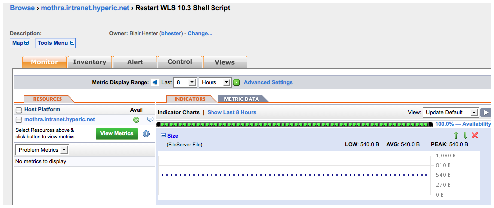

Overview of Running Control Actions
This page has instructions for running control actions on resources that support control actions. There are two types of control actions in Hyperic: control actions enabled by the managing resource plugin, and custom control actions implemented by Hyperic administrators. For more information, see Resource Control in Hyperic.
The process you use to selecting a control action to run varies for built-in and custom control actions:
- You select built-in control actions from the Control tab of the target resource — generally a server type.
- A custom control action is configured by a Hyperic administrator as service (of type "FileServer Service") on the platform where it runs. So, even if a custom control action target a server running on the platform, to invoke it, you navigate the platform service that represents the service on the parent platform.
Run a Built-in Control Action
To run a built-in control action — one that is enabled by a resource plugin — you navigate to the target resource, usually some type of server. (Control actions are typically available for servers, not for platforms, and rarely for services.)
- Navigate to the target resource.
- Click the Control tab.
- The Control page appears.

- The Control page appears.
- In the Quick Control section of the page, use the Control Action pull-down to display a list of supported actions.
- Select the desired control action, and click the green arrow to the right to initiate it.
Select and Run a Custom Control Action
Follow the instructions in Select from a List of All Custom Control Actions or Select from a List Custom Control Actions for a Platform, and then run the action, as described in Run Custom Control Action.
Select from a List of All Custom Control Actions
To select from a list of all custom control actions:
- Use Browse > Services > FileServer File.
- The Services > FileServer File page lists all custom control actions defined in your Hyperic deployment.

- The Services > FileServer File page lists all custom control actions defined in your Hyperic deployment.
- Click the name of the custom action you want to run.
- The Monitor tab for the custom control action appears.
 - Click the Control tab , and follow the instructions in Run Custom Control Action.
- The Monitor tab for the custom control action appears.
Select from a List Custom Control Actions for a Platform
To select from a list of control actions for the resources on a platform.
- Navigate to the platform.
- Custom control actions for a resources are listed in the "Platform Services Health* section.

- Custom control actions for a resources are listed in the "Platform Services Health* section.
- Click the desired control action.
- The Monitor tab for the custom control action appears.
- Click the Control tab, and follow the instructions in Run Custom Control Action.
- The Monitor tab for the custom control action appears.
Run Custom Control Action
- Navigate to the desired a custom control action using one of the options described above
- A page like the following appears:
- A page like the following appears:
- In the Quick Control section of the page, select "Run" from the Control Action pull-down to run the control action.
Schedule a Control Action
Available only in vFabric Hyperic
In vFabric Hyperic, you can schedule a control action to be run in the future — either once, or on a recurring basis.
- Select the Control tab:
- To schedule control actions for a resource with built-in control commands, navigate to the target resource, as described in Run a Built-in Control Action
- To schedule custom control actions, navigate to the platform service that represents, it following the in Run a Built-in Control Action, Select from a List of All Custom Control Actions or Select from a List Custom Control Actions for a Platform.
- In the Control Action Schedule section of the page, click New.
- On the New Scheduled Control Action Page:

- Select a control action from the Control Action ;pulldown.
- Description — Type a description, if desired.
- Start — Specify when you want to run the control action (or kick off a schedule of periodic control action execution):
- Click immediately if you want Hyperic to initiate the control action as soon as you save the schedule.
- Otherwise, select the date and a time you want Hyperic to run the control action.
- The Recur pulldown appears; select how frequently Hyperic should repeat the control action.
- Never - Choose this if you only want to run the command once.
- Daily
- Weekly
- Monthly
- The Recur pulldown appears; select how frequently Hyperic should repeat the control action.
- Click OK.